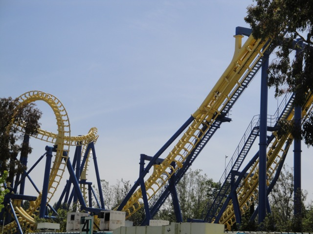
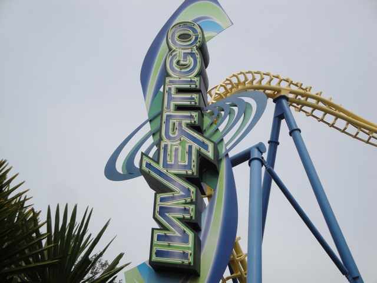
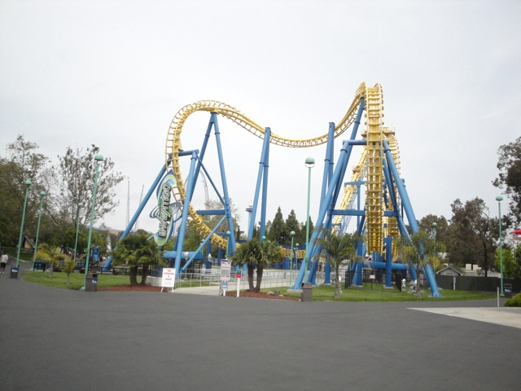
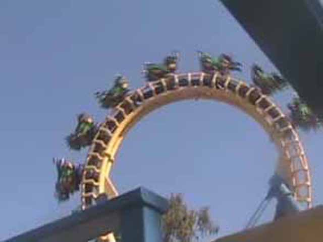
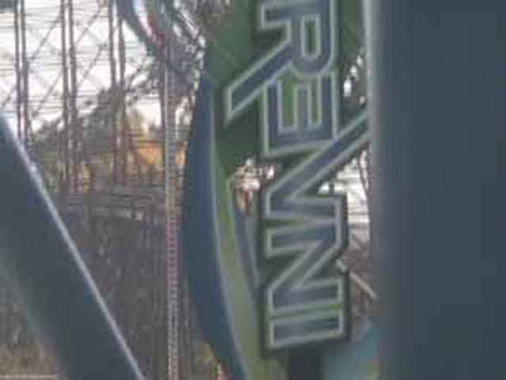

| |

Invertigo Review

For todays review, we're going back in time and reviewing Invertigo at California's Great America. It spent some time at Dorney Park for a couple years afterwards, but it ultimately left that park as well and died. Invertigo was a cool ride as it is a boomerang in all ways aside from the fact that it is an inverted coaster. Suprisingly, these rides are more fun than your average Boomerang. I think it's the fact that they're smoother. And the rareness factor also plays a role, since now with Invertigo gone from Dorney Park, there are only three Inverted Boomerangs left in the world today. After the doors opened, you get into the seat and pulled down the shoulder restraint and buckled the seatbelt. One interesting thing about these trains is that you wound up facing people right by you. Then the floor dropped and away you went. Then it's up the lifthill you climbed. While it was fun to kinda hang there, what we were really hoping for was to get stuck on the lifthill. Because if we got stuck on the lifthill for a couple minutes, we would've get a free visit to Knotts Berry Farm!!! But the stupid media will have to find something else to completely blow out of proportion as Invertigo is currently working. Then we dropped down into the station. We tried to wave hello to those in the station, but they could only hear the screams of those around us for the doors made them unable to see us. Then we soared up into the cobra roll. Unlike on many other Boomerangs, this was completely smooth and quite a lot of fun. Then we twisted into the second part of the cobra roll and dived back down. Now it's time for the loop. The loop was qute strong and provides us with quite a few forces. Now we went up the spike as now it's time for us to do it all backwards!! Or forewards if you decided to do it backwards first. Now if you were sitting across from someone who is terrified of this ride and scared to do it again, you were probably too busy laughing your ass off to notice the ride as you just keep laughing at brick that the person shat in their pants. Then we dropped back down. The loop was still pretty strong and fun in the opposite direction, then we soared back up into the cobra roll to twist around and land back into the station. While it was no DejaVu, it was still better than a normal Boomerang and was quite a lot of fun. Unfortunetly, something as simple as getting stuck on the lifthill can cause the f*cking media to freak out and treat it as if this was a mass murder accident (Honestly, I think actual mass shootings get less media coverage than that stupid f*cking "accident" did). I mean, this got reported in Europe! It was that big of a deal!!! I mean, this was about as big of an accident as when I got stuck in the Cold Chamber on Test Track! Hell, I think this is what caused California's Great America to move Invertigo to Dorney Park, before it eventually died. But hey, at least they didn't immedietly close it like Six Flags America did (Luckily, Movieland Studios saved that ride). Don't listen to what anybody says about "ZOMG!!!111 INVVEERTIGOA IZ A KILIN MASHIN CUZ ALL DOS PPL GT STUK UPZIDON ON DA RID!!!!!!111!!!11111!" That's all bullsh*t and I would totally recommend you ride a clone of this when visiting Kings Island, Movieland Studios, or that one random park in France that has an Invertigo clone.
7/10
Opened at California's Great America in 1998
Relocated to Dorney Park in 2012
Died at the end of the 2017 Season
Built by: Vekoma
Last Ridden: October 28, 2006
I have ridden this exact same ride at the following parks.
Kings Island
Invertigo Photos





|